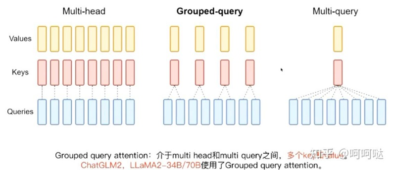

论文 #
GQA: Training Generalized Multi-Query Transformer Models from Multi-Head Checkpoints
MHA vs. MQA vs. GQA [1] #
MHA #
首先是原始的 MHA(Multi-Head Attention)，QKV 三部分有相同数量的头，且一一对应。每次做 Attention，head1 的 QKV 就做好自己运算就可以，输出时各个头加起来就行。
MQA #
而 MQA 则是，让 Q 仍然保持原来的头数，但 K 和 V 只有一个头，相当于所有的 Q 头共享一组 K 和 V 头，所以叫做 Multi-Query 了。实现改变了会不会影响效果呢？确实会影响但相对它能带来的收益，性能的些微降低是可以接受的。
能带来多大的收益呢，实验发现一般能提高 30%-40% 的吞吐。
收益主要就是由降低了 KV cache 带来的。实际上 MQA 运算量和 MHA 是差不多的，可理解为读取一组 KV 头之后，给所有 Q 头用，但因为之前提到的内存和计算的不对称，所以是有利的。
GQA #
而 GQA 呢，是 MHA 和 MQA 的折衷方案，既不想损失性能太多，又想获得 MQA 带来的推理加速好处。具体思想是，不是所有 Q 头共享一组 KV，而是分组一定头数 Q 共享一组 KV，比如上面图片就是两组 Q 共享一组 KV。
MQA 和 GQA 形式在推理加速方面，主要是通过两方面来完成：
- 降低了从内存中读取的数据量，所以也就减少了计算单元等待时间，提高了计算利用率；
- KV cache 变小了 head_num 倍，也就是显存中需要保存的 tensor 变小了，空出来空间就可以加大 batch size，从而又能提高利用率。
如果要用 MQA 和 GQA，可以是从头训练的时候就加上，也可以像 GQA 论文里面一样，用已有的开源模型，挑一些头取个 mean 用来初始化 MQA 或 GQA 继续训练一段时间。
GQA & MQA [2] #

图 4.1 Multi-head attention 拥有 H 个查询、键和值头。Multi-query attention 在所有 查询头之间共享单个键和值头。Grouped-query attention 则在每个查询头组之间共享单 个键和值头，从而在多头和多查询注意力之间进行插值。
Fig. 4.1 Multi-head attention has H query, key, and value heads. Multi-query attention shares single key and value heads across all query heads. Grouped-query attention instead shares single key and value heads for each group of query heads, interpolating between multi-head and multi-query attention.
参考 #
-
LLM学习系列1：大模型架构要点总结 主流大语言模型的技术原理细节 *** 腾讯 [架构] + 训练 + 微调
1xx. 理解Attention:从起源到MHA,MQA和GQA *** 1xx. 深度解析Group Query Attention(GQA)为什么能给LLM decoder带来极大推理加速 1xx. 深度学习中的注意力机制：MHA、MQA和GQA
1xx. 【研1基本功 （真的很简单）Group Query-Attention】大模型训练必备方法——bonus(位置编码讲解) v *** Nomolization[post, pre, sandwich] + Position Encoding[RoPE] + GQA代码 1xx. 一文通透各种注意力：从多头注意力MHA到分组查询注意力GQA、多查询注意力MQA 删除